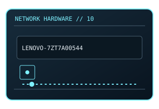

[ MODEL-SPECIFIC NETWORK HARDWARE ]
Lenovo ThinkSystem 10Gb 2-Port SFP+ Adapter (7ZT7A00544)
Lenovo option adapter providing two SFP+ Ethernet ports. This entry uses the labeled manufacturer model identifier and cites primary product/support documentation.

MODEL IDENTIFICATION: Match the complete model/part number and hardware revision on the item label to manufacturer documentation. Do not apply this entry to near-name variants.
Exact specifications and compatibility
| Cataloged model | Lenovo ThinkSystem 10Gb 2-Port SFP+ Adapter (7ZT7A00544) |
|---|---|
| Dedicated subcategory | 10 Gigabit and server adapters |
| Bus / host interface | PCIe server adapter; exact generation qualification is Lenovo-system specific. |
| Ports / physical interfaces | 2 × SFP+; use qualified 10GbE optical modules or DACs. |
| PHY, radio or protocol | 10GbE Ethernet; supported features depend on adapter controller, firmware and driver. |
| PoE | No PoE input or PoE output is documented for this product. |
| Link-rate vs throughput | 2 × 10 Gb/s nominal interface rate, not an application throughput guarantee. Link rates are nominal negotiated/PHY specifications, not measured application throughput; no measured specimen result is claimed. |
| Firmware / driver support | Lenovo firmware/driver packages and supported OS matrix apply. |
| Compatibility checks | Verify the 7ZT7A00544 option against the server model, riser and transceiver support list. |
Model-specific notes
Use the full seven-character option identifier when matching purchase records.
Primary manufacturer sources
- Lenovo ThinkSystem network adapter product guideManufacturer product specification or documentation for the exact model/family.
- Manufacturer support and compatibility resourcesFirmware, driver, compatibility, revision or support details; applicability may depend on the exact hardware revision and region.
Vendor maximum rates are not test results. Confirm regional variants, hardware revision and current support status with the manufacturer.